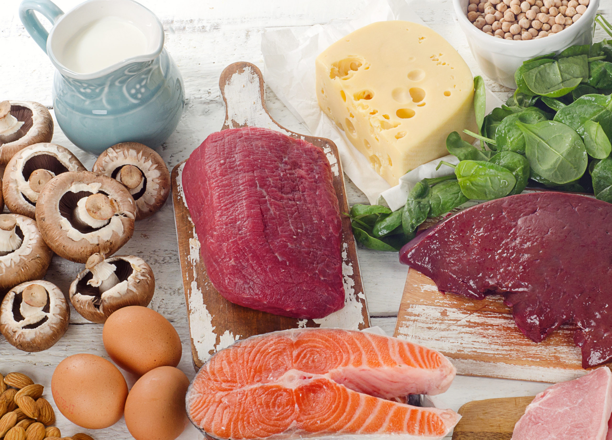
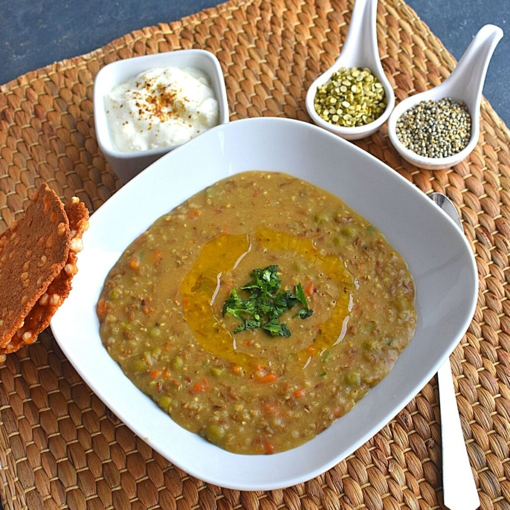

Riboflavin was first isolated by Blyth in 1872 from whey and is water-soluble, yellow in color, and a fluorescent material.
According to IUPAC rules, riboflavin is called 7,8-dimethyl-10. It is also called lactoflavin.
Maintaining the mucous membranes in the digestive system.
Maintaining a healthy liver.
Converting tryptophan into niacin, an amino acid.
Keeping the eyes, nerves, muscles, and skin healthy.
Absorbing and activating iron, folic acid, and vitamins B1, B3, and B6.
Hormone production by the adrenal glands.
Dairy milk.
Yogurt.
Cheese.
Eggs.
Lean beef and pork.
Organ meats (beef liver).
Chicken breast.
Salmon.
Angular cheilitis, or cracks at the corners of the mouth.
Cracked lips.
Dry skin.
Inflammation of the lining of the mouth.
Inflammation of the tongue.
Mouth ulcers.
Red lips.
Sore throat.
1/2 cup of moong dal.
1/2 cup of bajra, soaked for 8 hours.
1 tsp cumin seeds and 2 tsp ghee.
1/4 tsp turmeric.
Required amount of salt.
1. Combine bajra, moong dal, salt, and 1 cup of water. Pressure cook for 4 whistles.
2. Allow pressure to escape before opening the pressure cooker lid.
3. For tempering, heat ghee, add cumin seeds.
4. Once cumin seeds crackle, add asafoetida and turmeric. Heat all ingredients on medium flame for 3 minutes.
